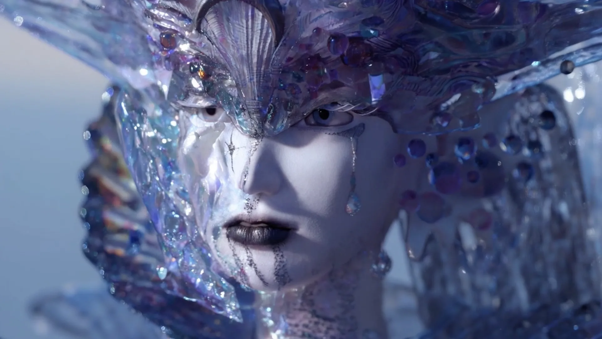
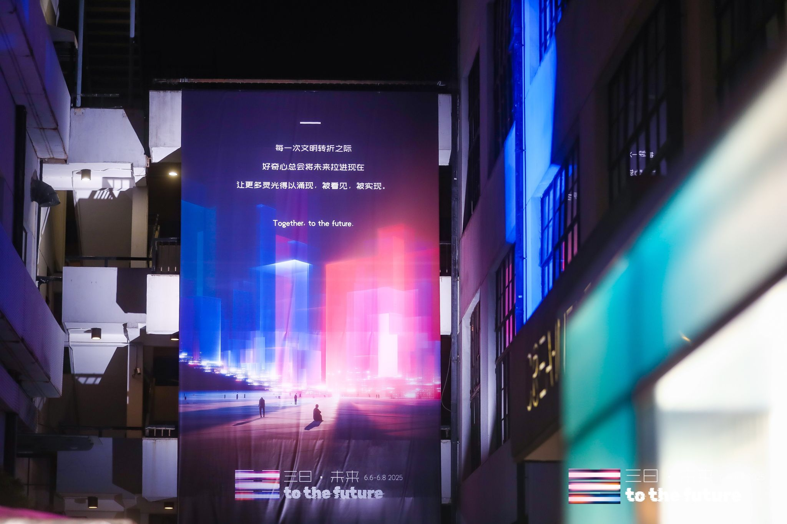
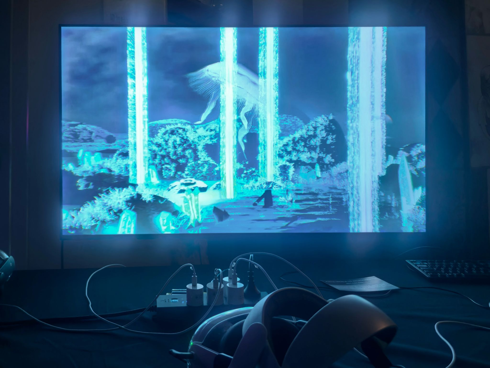

Project Overview
Carbonis: Siren's Elegia is a collaborative VR project that blends mythology, emergent ecological narratives, and immersive technology to critique capitalist exploitation, greenwashing, and environmental neglect through a cinematic interactive experience.
Creative Direction
As creative and art director, I led the core concept, narrative structure, and artistic vision. The story follows a protagonist whose body is sealed in a mysterious underwater saltwater pool symbolizing human greed, while their soul encounters Selene and the Sirens' judgment of humanity's ecological crimes.
Audience & Value
The project primarily speaks to young audiences engaged with environmental issues, social justice, and artistic expression, while also resonating with professionals in new media art and VR. It has potential applications in fashion communication, including brand storytelling, runway concepts, pop-ups, and immersive campaign experiences.
Festival Screening
The project was selected for the First FutureVision XR Art Festival, jointly organized by the Shanghai Theatre Academy and the Shanghai Municipal Culture & Creative Office, a major platform connecting immersive technology with contemporary art in China.
Gallery

.png)
.png)

